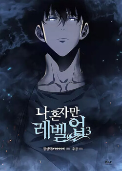
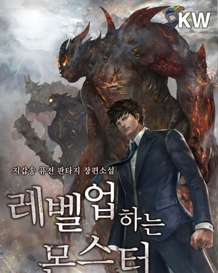
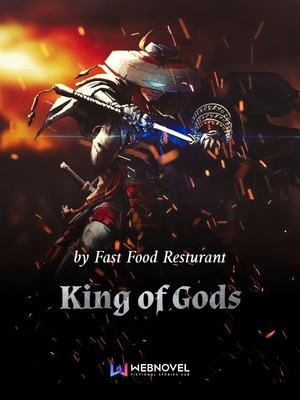
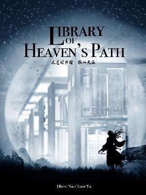

Good day, I am Rainiel Marcelino and i Like to shae some of my Favoite light novel that i read.
This is one of my favorite although the stoy is short, it's well written and unique back then it's one of the first system base world novel that I read
In this world where Hunters with various magical powers battle monsters from invading the defenseless humanity, Sung Jin-Woo was the weakest of all the Hunters, barely able to make a living. However, a mysterious System grants him the power of the ‘Player’, setting him on a course for an incredible and oftentimes perilous Journey. Follow Sung Jin-Woo as he embarks on an adventure to become an unparalleled existence through his “Level-Up” system – the only one in the entire world!
Just like solo leveling this light novel has a short story but well written, this novel is the first novel that I finished but not the first that i read cause all of them is ongoing, but this is the first apocalyptic base story that i read.
This is a story of a man named Kim Sae-Jin, who one day, inexplicably wakes up as a Monster. Follow him and his perilous journey to get his life back as a Human, all the while growing even more versatile as a Monster in the process. This should be… complicated, somewhat.
This one is my fav cause it's the first light novel that a read and one of the longest.
His will is tough and he is unwilling to be normal. However, his pathway was destined to be that way, being born in a small sect’s branch. However, one day, his left eye merges with the eye of an Ancient God in an accident. From that moment on, he turns from a fish into a dragon. He rises up like a star, walking the path of a legendary cultivator. From being a tiny, small ant at the bottom world, step by step he rises, into a place full of powerful sects, strong ancient clans and countless geniuses. This is an era of legends.
This is one of my favorite cause it's funny and it's one of those novel you can read leasurely and this one is the longest novel that I finished.
Zhang Xuan traverses into a foreign world and becomes an honorable teacher. A mysterious library appears in his mind. As long as it is something he has seen, regardless of whether it is a human or an object, a book on its weakness would be automatically compiled. Thus, he became formidable. “Emperor Haotian, why don’t you like to wear underwear? To think that you’re still an emperor, can you pay more attention to your image?” “Fairy Linglong, if you continue to suffer from insomnia, you can always look for me. I have a way with lullabies!” “You as well, Qiankun Demon Lord, can you cut down on the garlic? Do you want to stink me to death?” … This is an incredible story about the heritage between teacher and students, cultivating and guiding the world’s strongest experts.